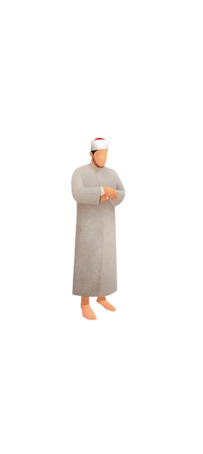
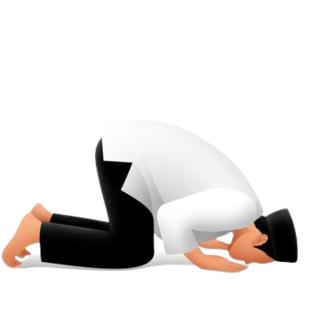
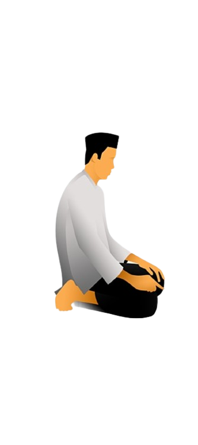
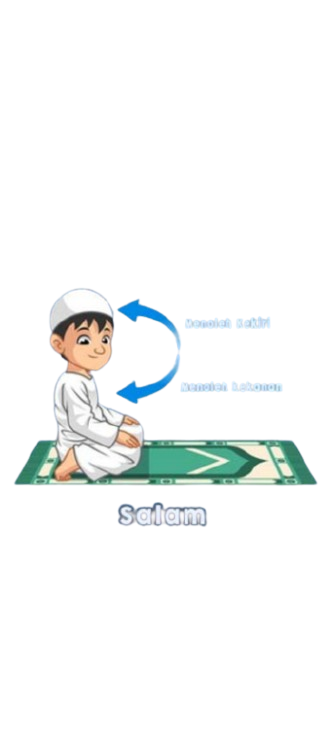

Iftitah
Panduan langkah demi langkah
Belajar Salat: Gerakan Inti
Ikuti urutan ringkas untuk salat fardu. Setiap langkah memiliki tips singkat.
1
Niat & Takbiratul Ihram
Niat di dalam hati sesuai salat yang dikerjakan. Angkat kedua tangan sejajar telinga sambil mengucap Allāhu Akbar.
2
Berdiri (Qiyām) membaca iftitah & Membaca Al-Fātiḥah

Baca iftitah dan Al-Fātiḥah lalu surat pendek. Pastikan arah kiblat dan ketenangan (ṭumaʼnīnah).
3
Rukuk
Punggung rata, tangan di lutut. Ucapkan Subḥāna rabbiyal ‘aẓīmi wabhihamdhi (3×).
4
I‘tidal
Bangun dari rukuk sambil mengucap Sami‘allāhu liman ḥamidah, kemudian Rabbanā lakal-ḥamdu milushamati wamilulardhi wamilumashitta minsainbad'u.
5
Sujud

Tempelkan tujuh anggota sujud. Ucapkan Subḥāna rabbiyal a‘lā wabhihamdhi (3×).
6
Duduk di antara dua sujud

Baca Rabbi-ighfir lī, warḥamnī, wajburnī, warfa‘nī, warzuqnī, wahdinī, wa‘āfinī, wa‘fu ‘annī.
7
Tasyahhud & Salam

Baca tasyahhud. Tutup salat dengan salam ke kanan dan kiri.
Teks Arab • Latin • Arti
Bacaan Salat Pilihan
Rukuk
I‘tidal
Sujud
Duduk di antara dua sujud
Tasyahhud
Zikir & Doa Setelah Salat
Zikir & Doa
Rangkaian zikir ringkas setelah salam.
Istighfar (3×)
أَسْتَغْفِرُ اللّٰهَ • أَسْتَغْفِرُ اللّٰهَ • أَسْتَغْفِرُ اللّٰهَ
Ayat Kursi
Bacakan Ayat Kursi (QS. Al-Baqarah: 255).
اللَّهُ لَا إِلَٰهَ إِلَّا هُوَ الْحَيُّ الْقَيُّومُ ۚ لَا تَأْخُذُهُ سِنَةٌ وَلَا نَوْمٌ ۚ لَهُ مَا فِي السَّمَاوَاتِ وَمَا فِي الْأَرْضِ ۗ مَنْ ذَا الَّذِي يَشْفَعُ عِنْدَهُ إِلَّا بِإِذْنِهِ ۚ يَعْلَمُ مَا بَيْنَ أَيْدِيهِمْ وَمَا خَلْفَهُمْ ۖ وَلَا يُحِيطُونَ بِشَيْءٍ مِنْ عِلْمِهِ إِلَّا بِمَا شَاءَ ۚ وَسِعَ كُرْسِيُّهُ السَّمَاوَاتِ وَالْأَرْضَ ۖ وَلَا يَئُودُهُ حِفْظُهُمَا ۚ وَهُوَ الْعَلِيُّ الْعَظِيمُ
Allāhu lā ilāha illā huwa al-ḥayyu al-qayyūm, lā ta’khudzuhu sinatun wa lā nawm, lahu mā fis-samāwāti wa mā fil-arḍ, man dhalladhī yashfa‘u ‘indahu illā bi’idhnih, ya‘lamu mā baina aydīhim wa mā khalfahum, wa lā yuḥīṭūna bishai’im min ‘ilmihī illā bimā shā’, wasi‘a kursiyyuhus-samāwāti wal-arḍ, wa lā ya’ūduhū ḥifẓuhumā, wa huwa al-‘aliyyul-‘aẓīm.
Artinya
“Allah, tidak ada Tuhan (yang berhak disembah) melainkan Dia, Yang Maha Hidup, Yang terus menerus mengurus (makhluk-Nya); tidak mengantuk dan tidak tidur. Kepunyaan-Nya apa yang di langit dan di bumi. Tiada yang dapat memberi syafa’at di sisi-Nya tanpa izin-Nya. Dia mengetahui apa-apa yang di hadapan mereka dan di belakang mereka, dan mereka tidak mengetahui sesuatu pun dari ilmu-Nya melainkan apa yang Dia kehendaki. Kursi-Nya meliputi langit dan bumi. Dan Dia tidak merasa berat memelihara keduanya, dan Dia Maha Tinggi lagi Maha Besar.”
Tasbih • Tahmid • Takbir (33×)
Subḥānallāh (33×), Alḥamdulillāh (33×), Allāhu Akbar (33×), lalu sempurnakan dengan Lā ilāha illallāhu waḥdahū lā syarīka lah ...
Doa Penutup
اَلْحَمْدُ لِلّٰهِ رَبِّ الْعَالَمِيْنَ، حَمْدًا يُوَافِي نِعَمَهُ وَيُكَافِئُ مَزِيْدَهُ، يَا رَبَّنَا لَكَ الْحَمْدُ كَمَا يَنْبَغِيْ لِجَلَالِ وَجْهِكَ وَعَظِيْمِ سُلْطَانِكَ. اَللّٰهُمَّ صَلِّ وَسَلِّمْ وَبَارِكْ عَلٰى سَيِّدِنَا مُحَمَّدٍ وَعَلٰى آلِهِ وَأَصْحَابِهِ أَجْمَعِيْنَ.
اَللّٰهُمَّ اغْفِرْ لَنَا ذُنُوْبَنَا وَلِوَالِدِيْنَا وَارْحَمْهُمْ كَمَا رَبَّوْنَا صِغَارًا، وَلِمَشَايِخِنَا وَلِمَنْ لَهُ حَقٌّ عَلَيْنَا، وَلِلْمُؤْمِنِيْنَ وَالْمُؤْمِنَاتِ، وَالْمُسْلِمِيْنَ وَالْمُسْلِمَاتِ، الْأَحْيَاءِ مِنْهُمْ وَالْأَمْوَاتِ.
اَللّٰهُمَّ اجْعَلْنَا مُقِيْمِي الصَّلَاةِ وَمِنْ ذُرِّيَّاتِنَا رَبَّنَا وَتَقَبَّلْ دُعَاء. رَبَّنَا اغْفِرْ لِيْ وَلِوَالِدَيَّ وَلِلْمُؤْمِنِيْنَ يَوْمَ يَقُوْمُ الْحِسَابُ.
رَبَّنَا آتِنَا فِي الدُّنْيَا حَسَنَةً، وَفِي الْآخِرَةِ حَسَنَةً، وَقِنَا عَذَابَ النَّارِ.
وَصَلَّى اللّٰهُ عَلٰى سَيِّدِنَا مُحَمَّدٍ وَعَلٰى آلِهِ وَصَحْبِهِ وَسَلَّمَ، سُبْحَانَ رَبِّكَ رَبِّ الْعِزَّةِ عَمَّا يَصِفُوْنَ، وَسَلَامٌ عَلَى الْمُرْسَلِيْنَ، وَالْحَمْدُ لِلّٰهِ رَبِّ الْعَالَمِيْنَ.Segala puji bagi Allah, Tuhan semesta alam. Pujian yang sesuai dengan nikmat-Nya dan menambah karunia-Nya. Wahai Tuhan kami, bagi-Mu segala puji sebagaimana layak untuk kebesaran wajah-Mu dan keagungan kekuasaan-Mu. Ya Allah, limpahkanlah rahmat, salam, dan keberkahan kepada junjungan kami Nabi Muhammad, keluarga, dan para sahabat beliau seluruhnya.
Ya Allah, ampunilah dosa-dosa kami, dosa kedua orang tua kami, sayangilah mereka sebagaimana mereka menyayangi kami di waktu kecil. Ampunilah guru-guru kami, orang-orang yang mempunyai hak atas kami, kaum mukminin dan mukminat, kaum muslimin dan muslimat, yang masih hidup maupun yang telah wafat.
Ya Allah, jadikanlah kami orang yang mendirikan salat, begitu pula anak keturunan kami. Ya Tuhan kami, kabulkanlah doa kami. Ya Tuhan kami, ampunilah aku, kedua orang tuaku, dan seluruh kaum mukmin pada hari perhitungan.
Ya Tuhan kami, berilah kami kebaikan di dunia, kebaikan di akhirat, dan lindungilah kami dari siksa neraka.
Semoga Allah senantiasa melimpahkan rahmat kepada Nabi Muhammad, keluarga, dan sahabat beliau. Maha Suci Tuhanmu, Tuhan Yang Maha Mulia dari sifat yang mereka katakan. Selamat sejahtera bagi para rasul. Segala puji bagi Allah, Tuhan semesta alam. .
Hadis untuk Motivasi Rajin Salat
Hadis Motivasi
Beberapa hadis sahih yang mendorong kita menjaga salat.
Amalan paling utama
سُئِلَ النَّبِيُّ ﷺ أَيُّ الْعَمَلِ أَفْضَلُ؟ قَالَ: «الصَّلَاةُ لِوَقْتِهَا»
Terjemah: Nabi ﷺ ditanya: "Amalan apakah yang paling utama?" Beliau menjawab: Salat pada waktunya. (HR. al-Bukhārī & Muslim)
Salat itu cahaya
وَالصَّلَاةُ نُورٌ
Terjemah: "Salat adalah cahaya." (HR. Muslim)
Istikamah
أَحَبُّ الأَعْمَالِ إِلَى اللّٰهِ أَدْوَمُهَا وَإِنْ قَلَّ
Terjemah: "Amal yang paling dicintai Allah adalah yang paling kontinu, walaupun sedikit." (HR. al-Bukhārī & Muslim)
Salat tiang agama
النَّبِيُّ ﷺ قَالَ: اَلصَّلَاةُ عِمَادُ الدِّينِ
Terjemah: Nabi ﷺ bersabda: “Shalat adalah tiang agama.”
(HR. Baihaqi)."
iman dan kufur
إِنَّ بَيْنَ الرَّجُلِ وَبَيْنَ الشِّرْكِ وَالْكُفْرِ تَرْكَ الصَّلاَةِ
Terjemah: “Sesungguhnya pembatas antara seorang hamba dengan kesyirikan dan kekufuran adalah meninggalkan shalat.”
." (HR. Muslim)
menghapus dosa
الصَّلَوَاتُ الْخَمْسُ، وَالْجُمُعَةُ إِلَى الْجُمُعَةِ، كَفَّارَةٌ لِمَا بَيْنَهُنَّ
Terjemah: Nabi ﷺ bersabda: “shalat lima waktu dan Jum’at ke Jum’at berikutnya adalah penghapus dosa di antara keduanya.”
(" (HR. Muslim)
wasiat terakhir nabi
اَلصَّلَاةَ اَلصَّلَاةَ وَمَا مَلَكَتْ أَيْمَانُكُمْ
Terjemah: “Jagalah shalat, jagalah shalat, dan (perhatikan) orang-orang yang lemah di antara kalian.”
(HR. Abu Dawud)
Salat penghapus kesalahan
أَرَأَيْتُمْ لَوْ أَنَّ نَهْرًا بِبَابِ أَحَدِكُمْ، يَغْتَسِلُ فِيهِ كُلَّ يَوْمٍ خَمْسًا، هَلْ يَبْقَى مِنْ دَرَنِهِ شَيْءٌ؟ قَالُوا: لاَ. قَالَ: فَذَلِكَ مَثَلُ الصَّلَوَاتِ الْخَمْسِ
Terjemah: “Bayangkan jika di depan rumah kalian ada sungai dan kalian mandi di dalamnya lima kali sehari, apakah masih ada kotoran tersisa? Mereka menjawab: Tidak. Beliau bersabda: Demikianlah perumpamaan shalat lima waktu.”
(HR. Bukhari & Muslim)."
pembeda orang munafik
إِنَّ أَثْقَلَ الصَّلَاةِ عَلَى الْمُنَافِقِينَ صَلَاةُ الْعِشَاءِ وَصَلَاةُ الْفَجْرِ
Terjemah: “Sesungguhnya shalat yang paling berat bagi orang munafik adalah shalat Isya dan shalat Subuh.”." (HR. Muslim)
Salat menjaga dari neraka
مَنْ حَافَظَ عَلَيْهَا كَانَتْ لَهُ نُورًا وَبُرْهَانًا وَنَجَاةً يَوْمَ الْقِيَامَةِ
Terjemah: “Barangsiapa menjaga shalat, maka shalat akan menjadi cahaya, bukti, dan keselamatan baginya pada hari kiamat.”
(HR. Ahmad)
Salat sebagai penebus dosa
مَا مِنِ امْرِئٍ مُسْلِمٍ تُصِيبُهُ صَلاَةٌ مَكْتُوبَةٌ فَيُحْسِنُ وُضُوءَهَا وَخُشُوعَهَا وَرُكُوعَهَا، إِلاَّ كَانَتْ كَفَّارَةً لِمَا قَبْلَهَا
Terjemah: ". “Tidaklah seorang Muslim melakukan shalat wajib, memperbagus wudhu, khusyuk, dan rukuknya, kecuali menjadi penebus dosa-dosa sebelumnya.”
(HR. Muslim)"
Catatan: Ringkasan teks Arab & terjemah di atas disajikan singkat untuk tujuan belajar dan motivasi.
0